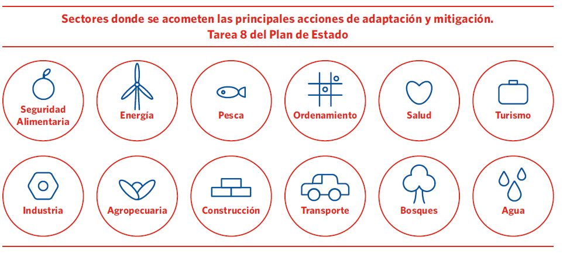

REPÚBLICA DE CUBA
2020-2030
Cuba está altamente comprometida con los esfuerzos globales para enfrentar el cambio climático y sus devastadores efectos.
Existe una probada voluntad política por parte del gobierno cubano, que se refleja en su conducta ética, en los permanentes esfuerzos en la promoción e implementación de acciones nacionales para combatir el cambio climático y honrar los compromisos internacionales del país; así como en la disposición de compartir sus experiencias y buenas prácticas con otras naciones como muestra de la cooperación solidaria que preconiza la Revolución Cubana.
En este contexto, el país ha obtenido importantes resultados a pesar de la prevalencia de grandes desafíos derivados de su condición de pequeño Estado insular en desarrollo sometido a un férreo bloqueo económico, comercial y financiero impuesto por el Gobierno de los Estados Unidos de América, recrudecido a niveles sin precedentes en los últimos años por la Administración del Presidente Trump, y que constituye el principal obstáculo para lograr mayores avances en el enfrentamiento al cambio climático y para el desarrollo del país.
Posterior a la adopción del Acuerdo de París, el Gobierno cubano ha continuado fortaleciendo sus esfuerzos nacionales y construyendo un marco ambicioso de acciones de adaptación y mitigación. En ocasión de la Cumbre sobre la Acción Climática, convocada por el Secretario General de la ONU en septiembre de 2019, Cuba presentó algunos de sus resultados más significativos y las proyecciones de sus políticas públicas para el enfrentamiento al cambio climático, como parte de las iniciativas que contribuyen a los esfuerzos globales que hoy tienen lugar. En esa ocasión se informó sobre el trabajo nacional en una plataforma de acción más amplia y ambiciosa que la formulada en la propuesta de Contribución Nacionalmente Determinada de noviembre de 2015.
Durante la 25 Conferencia de las Partes, celebrada en Madrid en diciembre de 2019, el Jefe de la Delegación Cubana declaró la decisión del país de actualizar su Contribución Nacionalmente Determinada en el 2020.
El presente documento, constituye la actualización de la Primera Contribución Nacionalmente Determinada de Cuba ante la Convención Marco de las Naciones Unidas sobre Cambio Climático y se presenta en concordancia con los Artículos 3 y 4 del Acuerdo de París, y los párrafos 22 y 24 de la Decisión 1 CP 21 de 2015.
Al consignar así su incremento de la ambición en esta actualización, Cuba reitera su posición respecto a que el contenido de la Contribución Nacionalmente Determinada es establecido por cada país de manera voluntaria y no prescriptiva, y debe ser visto en el contexto amplio identificado por el Articulo 3 del Acuerdo de París.
Estas Contribuciones deben ser examinadas en el contexto de las Responsabilidades Comunes pero Diferenciadas de las Partes de la Convención, lo cual implica, entre otros elementos, que poder materializar los compromisos expresados por los países en desarrollo, demanda de recursos financieros, transferencia de tecnología y creación de capacidades, que de forma incremental deben aportar los países desarrollados, conforme a sus obligaciones establecidas en la Convención Marco y el Acuerdo de París.
La nueva Constitución de la República de Cuba, aprobada en 2019 por referendo popular, se refiere expresamente al cambio climático en el contexto de las relaciones internacionales y conforme a su Artículo 16, Inciso f “promueve la protección y conservación del medio ambiente y el enfrentamiento al cambio climático, que amenaza la sobrevivencia de la especie humana, sobre la base del reconocimiento de responsabilidades comunes, pero diferenciadas; el establecimiento de un orden económico internacional justo y equitativo y la erradicación de los patrones irracionales de producción y consumo”.
Las Bases del Plan Nacional de Desarrollo Económico y Social hasta 2030 constituyen la principal herramienta del país para lograr sus objetivos de un desarrollo próspero, económica, social y ambientalmente sostenible, que sea resiliente y menos intenso en emisiones de carbono.
El enfrentamiento al cambio climático es identificado como prioridad en las Bases del Plan. En particular el “Eje estratégico: Recursos naturales y medio ambiente” declara como uno de sus tres Objetivos generales: “Fortalecer las capacidades nacionales para la adaptación al cambio climático” y refrenda entre sus “Objetivos específicos”, seis que se refieren al enfrentamiento al cambio climático y se relacionan a continuación.
| Objetivo General 3. Disminuir la vulnerabilidad del país ante los efectos del cambio climático mediante la ejecución gradual del Plan de Estado para el enfrentamiento a este. |
|---|
| Objetivo específico 11. Elevar la eficiencia energética y el desarrollo de fuentes renovables de energía (FRE), lo que contribuye, entre otros beneficios, a reducir la generación de gases de efecto invernadero, a mitigar el cambio climático y a promover un desarrollo económico menos intenso en carbono. |
| Objetivo específico 12. Implementar de manera eficaz y eficiente los programas y acciones para el enfrentamiento al cambio climático, con énfasis en la adaptación, la reducción de la vulnerabilidad, y la introducción de estrategias sistémicas e intersectoriales. |
| Objetivo específico 14. Detener la degradación de la zona costera y ecosistemas marinos, y adoptar medidas para su restauración y el desarrollo sustentable de la pesca, el turismo y la adaptación ante el cambio climático. Disminuir la vulnerabilidad costera para los asentamientos amenazados por el aumento del nivel del mar. |
| Objetivo específico 15. Implementar incentivos económicos (tributarios, arancelarios, crediticios, entre otros), para lograr la sostenibilidad financiera en el uso y conservación de los recursos naturales y el medio ambiente, la lucha contra la contaminación, y el enfrentamiento al cambio climático. Avanzar en el establecimiento de las cuentas ambientales. |
| Objetivo específico 19. Perfeccionar el Sistema de Defensa Civil para la reducción de desastres ante peligros de origen natural, tecnológico y sanitario con un mayor uso de la ciencia y la tecnología, y desarrollar una eficaz y eficiente gestión integral de riesgos, con la activa participación de las comunidades, entidades, gobiernos locales y la sociedad en general, que minimice los daños, disminuya la vulnerabilidad costera para los asentamientos amenazados por el aumento del nivel del mar, viabilice la mejor evaluación económica del impacto de los desastres y de los costos de la adaptación a los efectos del cambio climático, y posibilite la recuperación rápida y organizada de las áreas y poblaciones afectadas. |
| Objetivo específico 20. Fomentar la utilización de la cooperación internacional para enfrentar los efectos del cambio climático, la contaminación y el deterioro ambiental. Mantener la complementariedad e integración en el área de América Latina y el Caribe. |
Los Lineamientos de la Política Económica y Social del Estado y la Revolución, aprobados por la Asamblea Nacional del Poder Popular en julio de 2016, abordan también el tema del enfrentamiento al cambio climático e indican:
Lineamiento 107. Acelerar la implantación de las directivas y de los programas de ciencia, tecnología e innovación, dirigidos al enfrentamiento del cambio climático, por todos los organismos y entidades, integrando todo ello a las políticas territoriales y sectoriales, con prioridad en los sectores agropecuario, hidráulico y de la salud. Elevar la información y capacitación que contribuya a objetivizar la percepción de riesgo a escala de toda la sociedad.
Lineamiento 237. Continuará desarrollándose el programa hidráulico con inversiones de largo alcance para enfrentar el impacto del cambio climático y materializar las medidas de adaptación: la reutilización del agua; la captación de la lluvia; la desalinización del agua de mar y la sostenibilidad de todos los servicios asociados, que permita alcanzar y superar los objetivos de desarrollo sostenible.
En abril de 2017 el Gobierno adopta el Plan de Estado para el Enfrentamiento al Cambio Climático, conocido en la sociedad cubana como “Tarea Vida”. El Plan se estructura en 5 Acciones Estratégicas, y 11 Tareas.
Las Acciones 1, 3 y 5 se ocupan de los asentamientos costeros vulnerables y orientan, sucesivamente, no permitir las construcciones de nuevas viviendas en los asentamientos costeros amenazados que se pronostica su desaparición por inundación permanente y los más vulnerables, y reducir la densidad demográfica en las zonas bajas costeras (AE 1); desarrollar concepciones constructivas en la infraestructura, adaptadas a las inundaciones costeras para las zonas bajas (AE 2); y planificar los procesos de reordenamiento urbano de los asentamientos e infraestructuras amenazadas, comenzando por medidas de menor costo, como soluciones naturales inducidas (recuperación de playas, reforestación). (AE 5).
Las 11 Tareas del Plan, cubren una amplia gama de acciones. La No.1 da cumplimiento a la indicación de priorizar zonas vulnerables, identificadas en el Anexo 1 del Plan de Estado. Se trata de medidas para la protección costera de las ciudades, relocalización de asentamientos humanos, recuperación integral de playas, manglares y otros ecosistemas naturales protectores, obras hidráulicas y de ingeniería costera, entre otras.
Las Tareas siguientes se ocupan del marco legal (Tarea 2), las playas (Tarea 3), la disponibilidad y uso eficiente del agua (Tarea 4), la reforestación (Tarea 5), los arrecifes de coral (Tarea 6), el ordenamiento territorial y urbano (Tarea 7), el fortalecimiento de los sistemas de monitoreo, vigilancia y alerta temprana (Tarea 9), la elevación de la percepción del riesgo, el aumento del nivel de conocimiento y el grado de participación de toda la población (Tarea 10), y la búsqueda de financiamiento internacional (Tarea 11). De particular complejidad es la Tarea 8 que indica implementar y controlar las medidas de adaptación y mitigación al cambio climático derivadas de las políticas sectoriales en los programas, planes y proyectos vinculados a 12 sectores priorizados.

Para Cuba el enfrentamiento al cambio climático es una alta prioridad. El archipiélago cubano es muy vulnerable al cambio climático global, dada su condición de pequeño estado insular situado en la región tropical del planeta. El cambio climático viene agravando y agravará en el futuro, los problemas ambientales que enfrenta el país1 convirtiéndose paulatinamente en un factor determinante del desarrollo sostenible.
El clima en Cuba es hoy más cálido y extremo. Desde mediados del siglo pasado la temperatura promedio anual ha aumentado en 0.9 grados Celsius. La última década del pasado siglo y la primera del presente han sido las más cálidas de acuerdo a las mediciones históricas de la temperatura. Se ha registrado el ascenso del nivel del mar en los últimos cuarenta años según mediciones en varios puntos del archipiélago cubano. La disponibilidad de agua disminuye; los resultados demuestran que en el presente ha disminuido más del 20% respecto al año 1990.
Se ha observado una gran variabilidad en la actividad ciclónica y en la actualidad se manifiesta una etapa muy activa. El régimen de lluvias está variando. En las últimas décadas las lluvias en el período seco han aumentado y disminuyen en los meses húmedos. La frecuencia y extensión de las sequías se ha incrementado significativamente desde 1960; con daños mayores en la región oriental.
Se estima una reducción significativa del potencial hídrico a escala nacional, regional y local. El impacto del cambio climático sobre los recursos hídricos será una de las afectaciones más importantes del cambio climático, debido al carácter estratégico del agua para el desarrollo del país, en particular de la agricultura. Las investigaciones realizadas demuestran que los recursos hídricos aprovechables podrían ser el 60% de los existentes hoy en día, acrecentándose la competencia existente entre la disponibilidad de agua, la creciente demanda humana y la necesidad de mantener el equilibrio de los ecosistemas.
El nivel medio del mar aumenta. Las proyecciones futuras indican ascensos que implicarían una disminución lenta de la superficie emergida del país y la salinización paulatina de los acuíferos subterráneos costeros, por el incremento de la intrusión salina y el consecuente avance de la “cuña salina”. Por su parte la sobreelevación del nivel del mar debido a los huracanes intensos y otros eventos meteorológicos extremos, continuará representando un peligro importante del cambio climático para el archipiélago cubano por las inundaciones costeras y la destrucción del patrimonio natural y humano cercano a la costa.
De manera general, se puede asegurar que el clima cubano transita de su condición de tropical húmedo a tropical seco, con temperaturas promedio superiores a los 30°C, aproximadamente 1000 mm de lluvia promedio anual y 70 días con lluvia, condiciones que propiciarán el desplazamiento de los paisajes secos de la región oriental hacia otras zonas del país. Se puede asegurar que la temperatura del aire continuará incrementándose, de manera consistente con las estimaciones hechas en modelaciones anteriores realizadas en Cuba, pudiendo llegar a 4.5°C. El mayor calentamiento se producirá fundamentalmente en el período más cálido del año, señal que será más clara a medida que avance el tiempo.
La precipitación mantendrá la tendencia estimada al descenso. Disminuirán los días con precipitaciones; aumentarán las grandes precipitaciones y las precipitaciones intensas; y se incrementarán en intensidad y duración los procesos de sequía. La radiación solar aumentará, en correspondencia con la disminución de la cobertura nubosa.
El bloqueo económico, comercial y financiero impuesto por el gobierno de los Estados Unidos de América contra Cuba durante casi 6 décadas constituye el principal obstáculo para el desarrollo del país al impactar negativamente sobre todas las esferas y sectores de la vida y la sociedad cubanas, incluyendo sobre las políticas, programas y acciones para enfrentar el cambio climático y sus efectos. El bloqueo representa la barrera fundamental para el acceso de Cuba a fuentes de financiamiento internacionales, insumos y tecnologías.
En los últimos años, luego de la llegada a la Casa Blanca de la Administración del Presidente Donald Trump, se ha producido un recrudecimiento sin precedentes del bloqueo y de la política de hostilidad hacia Cuba. Una demostración de la afirmación anterior fue la decisión de activar el Título III de la Ley Helms-Burton. Como consecuencia las actividades económicas de Cuba se han visto fuertemente impactadas, en particular las relacionadas con operaciones de comercio exterior y la inversión extranjera, a partir de sus efectos disuasivos e intimidatorios, a lo que suma el temor que generan también las restantes regulaciones y leyes del bloqueo.
El comportamiento del actual gobierno de los Estados Unidos constituye una afrenta a la comunidad internacional que por 28 años consecutivos ha condenado, casi unánimemente, el bloqueo, incluida la Ley Helms-Burton. Desconoce sucesivas resoluciones de la Asamblea General de las Naciones Unidas y las declaraciones de las Cumbres de Jefes de Estado y/o Gobierno de la Unión Europea, América Latina y el Caribe, de la Unión Africana, de la Comunidad de Estados de América Latina y el Caribe (CELAC); así como de la Reunión Ministerial del Grupo de los 77 más China; de diferentes partidos políticos, personalidades, empresarios, dentro y fuera de los Estados Unidos.
El impacto de esta política, especialmente del bloqueo, gravita sobre toda la agenda climática de Cuba, presentando serias limitaciones en el actuar nacional y en la capacidad del país para alcanzar metas más ambiciosas 2.
Las características generales de la CND actualizada se reflejan en la tabla siguiente:
| INDICADOR | DESCRIPCIÓN | |
|---|---|---|
| 1. Metas | 1.1. Metas en adaptación | Voluntarias. |
| 1.2. Metas en mitigación | Del tipo acciones y políticas. | |
| 2. Período | 2020 – 2030 | |
| 3. Puntos de referencia | Los años base o de referencia se especifican en cada contribución. | |
| 4. Alcance y la cobertura | Sectores: Energía; Agricultura, Silvicultura y Otros Usos de la Tierra (AFOLU, por sus siglas en inglés). Gases: CO2; CH4; N2O. |
|
| 5. Incremento de la ambición |
Se expresa en:
|
|
| 6. Otros elementos. |
|
|
Se reafirma la adaptación como la prioridad principal del país, debido al impacto negativo del cambio climático sobre sus ecosistemas naturales y humanos y dado el bajo nivel de emisiones de Gases de Efecto de Invernadero (GEI) en el país.
Las acciones de adaptación aquí reflejadas, de manera consistentes con las políticas públicas, se presentan para indicar las prioridades de Cuba de acuerdo con sus circunstancias, y no indican en modo alguno una obligación internacional del país.
Cuba identifica expresamente, en el Plan Anual de la Economía, recursos destinados a la adaptación. Estas cifras hacia futuro tendrán el nivel que permitan las posibilidades financieras del país. Para responder a los crecientes impactos del cambio climático se requerirán montos muy superiores.
Estas y otras áreas asociadas al desarrollo económico y social del país, demandarán de recursos financieros, tecnología y creación de capacidades, provenientes de la cooperación internacional, y del cumplimiento de las obligaciones de los países industrializados bajo la Convención Marco de las Naciones Unidas sobre el cambio climático y de una mayor efectividad y agilidad en la gestión de los Fondos Multilaterales, en particular el Fondo Verde para el Clima.
| No permitir las construcciones de nuevas viviendas en los asentamientos costeros amenazados que se pronostica su desaparición por inundación permanente y los más vulnerables. Reducir la densidad demográfica en las zonas bajas costeras. |
| Desarrollar concepciones constructivas en la infraestructura, adaptadas a las inundaciones costeras para las zonas bajas. |
| Adaptar las actividades agropecuarias, en particular las de mayor incidencia en la seguridad alimentaria del país, a los cambios en el uso de la tierra como consecuencia de la elevación del nivel del mar y la sequía. |
| Reducir las áreas de cultivos próximas a las costas o afectadas por la intrusión salina. Diversificar los cultivos, mejorar las condiciones de los suelos, introducir y desarrollar variedades resistentes al nuevo escenario de temperaturas. |
| Planificar en los plazos determinados los procesos de reordenamiento urbano de los asentamientos e infraestructuras amenazadas, en correspondencia con las condiciones económicas del país. Comenzar por medidas de menor costo, como soluciones naturales inducidas (recuperación de playas, reforestación). |
| Conservar, mantener y recuperar integralmente las playas arenosas del archipiélago cubano, priorizando las urbanizadas de uso turístico y reduciendo la vulnerabilidad estructural del patrimonio construido. |
| Asegurar la disponibilidad y uso eficiente del agua como parte del enfrentamiento a la sequía, a partir de la aplicación de tecnologías para el ahorro y la satisfacción de las demandas locales. Elevar la infraestructura hidráulica y su mantenimiento, así como la introducción de acciones para la medición de la eficiencia y productividad del agua. |
| Dirigir la reforestación hacia la máxima protección de los suelos y las aguas en cantidad y calidad; así como a la recuperación de los manglares más afectados. Priorizar los embalses, canales y franjas hidrorreguladoras de las cuencas tributarias de las principales bahías y de las costas de la plataforma insular. |
| Detener el deterioro, rehabilitar y conservar los arrecifes de coral en todo el archipiélago, con prioridad en las crestas que bordean la plataforma insular y protegen playas urbanizadas de uso turístico. Evitar la sobrepesca de los peces que favorecen a los corales. |
| Mantener e introducir en los planes de ordenamiento territorial y urbano los resultados científicos del Macroproyecto sobre Peligros y Vulnerabilidad de la zona costera (2050-2100); así como los Estudios de Peligro, Vulnerabilidad y Riesgo en el ciclo de reducción de desastres. Emplear esta información como alerta temprana para la toma de decisiones. |
| Implementar y controlar las medidas de adaptación derivadas de las políticas sectoriales en los programas, planes y proyectos vinculados a la seguridad alimentaria, el ordenamiento territorial y urbano, la pesca, la agropecuaria, la salud, el turismo, la construcción, el transporte, la industria y el manejo integral de los bosques. (Se trata de un programa amplio que abarca 12 sectores y deben examinarse las acciones a aplicar, de conformidad con los programas sectoriales respectivos) |
| Fortalecer los sistemas de monitoreo, vigilancia y alerta temprana para evaluar sistemáticamente el estado y calidad de la zona costera, el agua, la sequía, el bosque, la salud humana, animal y vegetal. |
| Priorizar las medidas y acciones para elevar la percepción del riesgo y aumentar el nivel de conocimiento y el grado de participación de toda la población en el enfrentamiento al cambio climático y una cultura que fomente el ahorro del agua. |
Para toda acción de adaptación que se considere, se valorarán los posibles beneficios en mitigación.
Respecto a la mitigación, la contribución de Cuba a las emisiones globales de gases de efecto invernadero es mínima. En el 2016, último año en el que se estimaron las emisiones de GEI en Cuba, en la estructura de las emisiones totales brutas se contabilizaron en 50,213.7 ktCO2eq. y las absorciones en 27,147.2 ktCO2eq., dando como resultado unas 23,066.5 ktCO2eq. de emisiones netas. De las emisiones totales brutas de GEI, el 70.5% corresponden al sector Energía, las que sumadas con las del sector AFOLU, totalizan el 90.6% de las emisiones del país.
Pese al bajo impacto de las emisiones, y la prioridad y el costo que para el país significa la adaptación, Cuba ha desarrollado y financiado sistemáticamente acciones de mitigación asociadas al ahorro, el empleo de fuentes renovables de energía, la eficiencia energética y la reforestación, las que en algunos casos han tenido un papel destacado, respecto a las tendencias internacionales.
El Plan Nacional de Desarrollo Económico y Social al 2030 (PNDES 2030), introduce por primera vez en las políticas públicas del país, el concepto de un desarrollo menos intenso en emisiones de gases de efecto invernadero. Por lo que la mitigación es apreciada en las políticas nacionales como una dimensión esencial del desarrollo, que contribuye a la modernización y el desarrollo tecnológico sobre bases de sostenibilidad, al fortalecimiento de sus capacidades, la mejora de la efectividad y eficiencia de los procesos al disminuir el consumo de portadores energéticos de origen fósil, a un uso de tecnologías más eficientes, a una mejor gestión de los residuos, entre otros elementos importantes y transversales a toda la actividad económica del país.
Teniendo en cuenta el aporte sectorial al inventario nacional de GEI, los sectores priorizados para la reducción de emisiones, en la etapa actual, son el sector de energía y la agricultura. En estos sectores se concentran los esfuerzos del país en la identificación e implementación de las medidas de mitigación. Las medidas identificadas requerirán, para su completa implementación, de un apoyo financiero, en transferencia de tecnologías y fortalecimiento de capacidades. Un resumen de las contribuciones en mitigación por sectores que conforman la CND del país se muestra en la tabla siguiente.
| NO. | CONTRIBUCIÓN | SECTOR |
|---|---|---|
| 1. | Incremento hasta un 24% de la generación de electricidad en base a FRE en la matriz eléctrica de Cuba para el año 2030. | Energía (generación eléctrica) |
| 2. | Incremento de la eficiencia y el ahorro energéticos. | Energía (Otros sectores: comercial/institucional, residencial, agricultura) |
| 3. | Transporte terrestre menos intenso en carbono. | Energía (Combustión, fuentes móviles, transporte terrestre). |
| 4. | Incremento de la cobertura forestal del país hasta 33% en el año 2030 | AFOLU (Forestal) |
| 5. | Reducción de emisiones de GEI en el sector porcino en Cuba | AFOLU (Agricultura, ganadería) |
En los cinco cuadros que aparecen a continuación se detallan cada una de las contribuciones en mitigación.
| Nombre de la contribución: Incremento hasta un 24% de la generación de electricidad en base a FRE en la matriz eléctrica de Cuba para el año 2030. | |||||
|---|---|---|---|---|---|
| Objetivo | Indicador de seguimiento (magnitud). | Entidad Ejecutora | Estado | Año base / año meta | Valor base / valor meta |
| Contribución no- GEI. Objetivo: contribuir a la modificación de la matriz de generación eléctrica. | Fracción de energía generada por FRE en la matriz eléctrica (%). | UNE (MINEM); AZCUBA | Diseño, implementación parcial. | 2014 / 2030 | 4.1% / 24% |
| Breve descripción de la contribución |
En el año 2014 la generación eléctrica del país fue de 18,393 GWh, de ello sólo el 4.1% se generó en base a FRE (biomasa cañera – 3.4%; eólica+solar fotovoltaica+hidro – 0.7%). Para el año 2030 se ha estimado una generación eléctrica de 29,591 GWh. La contribución consiste en lograr una generación del 24 % de esa energía en el 2030 en base a FRE (biomasa cañera – 14%; eólica+solar fotovoltaica+hidro – 10%). Dentro de las principales acciones se incluye la instalación de una capacidad de unos 2,144 MW de potencia conectada a la red hasta el 2030 en base a FRE. El costo total estimado de implementación de la contribución se ha calculado en 7,723 millones de USD. El financiamiento para implementar el programa se prevé obtener de dos fuentes principales: créditos a largo plazo para cubrir, fundamentalmente, la importación de la tecnología (por un monto de 4,713 millones de USD) y por financiamiento propio (principalmente del presupuesto estatal, 3,010 millones de USD). |
||||
| Resultados que se espera obtener. |
Generación eléctrica del 24% en base a FRE en el año 2030. Se estima que la contribución evite la emisión de 30.6 millones de toneladas de CO2eq. a la atmósfera en el período 2014 - 2030. |
||||
| Condicionamiento para ejecución de la contribución. | Se requiere el apoyo en créditos a largo plazo por un monto de 4,713 millones de USD para la implementación de la contribución. | ||||
| Metodologías y/o métodos sobre los que se espera realizar seguimiento. | El dato de nivel de actividad (generación en MWh) se obtiene del sistema estadístico complementario del MINEM a partir de los registros de generación eléctrica anual por FRE. El factor de emisión de la red eléctrica se determina siguiendo la metodología de las Guías IPCC 2006, Volumen 2, capítulo 2, epígrafe 2.3 y es publicado en el sistema estadístico complementario del MINEM. | ||||
| Acciones requeridas para su adecuación a lo establecido bajo el Acuerdo de París | Se requiere establecer el sistema de Medición, Reporte y Verificación (MRV) para cada una de las medidas que conforman la contribución; en base a las metodologías adoptadas realizar el recálculo de las proyecciones de reducción de emisiones, incluido la estimación del factor de emisión de la red. | ||||
|
Nombre de la contribución: Incremento de la eficiencia y el ahorro energético. |
|||||
|---|---|---|---|---|---|
| Objetivo | Indicador de seguimiento (magnitud). | Entidad Ejecutora | Estado | Año base / año meta | Valor meta* |
| Contribución no-GEI. Objetivo: Disminución del consumo de combustibles fósiles, incremento de la eficiencia y el ahorro energético. | Unidades | ONURE (MINEM); GEGAN (MINAG) | Diseño, implementación parcial. | 2014 / 2030 | Calentadores Solares: 833,333 U (1,000,000 m2) Luminarias LED: 15,250,000 U Cocinas de inducción: 2,000,000 U Bombas solares: 5,000 U |
| Breve descripción de la contribución. |
La contribución incluye para el año 2030: La instalación de 833,333 unidades de calentadores solares (Un millón de m2 de área de captación) en los sectores residencial e industrial. La instalación de 15 millones 250 mil lámparas LED en el sector residencial y público. La sustitución de 2 millones de cocinas eléctricas de resistencia por cocinas de inducción. La instalación de 5,000 sistemas de bombeos solares en la ganadería. Se prevé, además, entre los indicadores cualitativos, la implementación de los Sistemas de Gestión de la Energía por medio de los requisitos que establece la norma cubana e internacional NC ISO 5000, así como otras regulaciones para el uso eficiente de la energía, previstos en el Decreto Ley 345 vigente en el país. |
||||
| Resultados que se espera obtener. | Se estima que la contribución evite la emisión de unas 700 mil de toneladas de CO2eq. a la atmósfera en el período 2014 - 2030. | ||||
| Condicionamiento para ejecución de la contribución. | Se requiere el apoyo en créditos a largo plazo para la implementación de la contribución. | ||||
| Metodologías y/o métodos sobre los que se espera realizar seguimiento. | El dato de nivel de actividad (energía dejada de consumir: diferencia del consumo de los dispositivos actuales y los dispositivos instalados) se obtiene del sistema estadístico complementario del MINEM a partir de los registros de ONURE. El factor de emisión de la red eléctrica se obtiene del publicado en el sistema estadístico complementario del MINEM. El factor de emisión de la red (FEred) se determina siguiendo la metodología de las Guías IPCC 2006, Volumen 2, capítulo 2, epígrafe 2.3. | ||||
| Acciones requeridas para su adecuación a lo establecido bajo el Acuerdo de París | Se requiere establecer los sistemas MRV para cada una de las medidas que conforman la contribución; en base a las metodologías adoptadas realizar el recálculo de las proyecciones de reducción de emisiones. | ||||
* Se partió de un valor base cero para todos los sistemas.
|
Nombre de la contribución: Transporte terrestre menos intenso en carbono. |
|||||
|---|---|---|---|---|---|
| Objetivo | Indicador de seguimiento (magnitud). | Entidad Ejecutora | Estado | Año base / año meta | Valor base / valor meta |
| Contribución no- GEI. Objetivo: Reducción del consumo de combustibles fósiles en vehículos terrestres en un 50% en el año 2030. | Porciento de consumo de combustibles fósiles en vehículos terrestres (%) | MITRANS | En fase de diseño y preparación para su implementación | 2018 / 2030 | 100% / 50% |
| Breve descripción de la contribución. |
La contribución prevé la introducción de más de 55 mil vehículos eléctricos y la instalación de unos 25 mil puntos o estaciones de recarga para el año 2030. El costo total estimado de implementación de la contribución se ha calculado en 1,479 millones de USD. El financiamiento para implementar el programa se prevé obtener de dos fuentes principales:créditos a largo plazo, para cubrir, fundamentalmente, la importación de la tecnología (por un monto de 1,261 millones de USD) y por financiamiento propio (principalmente del presupuesto del Estado, 218 millones de USD). |
||||
| Resultados que se espera obtener. | Se estima que la contribución evite la emisión de un millón de toneladas de CO2eq. anualmente. | ||||
| Condicionamiento para ejecución de la contribución. | Se requiere el apoyo en créditos a largo plazo para la implementación de la contribución. | ||||
| Metodologías y/o métodos sobre los que se espera realizar seguimiento. |
El dato de nivel de actividad (consumo de combustibles fósiles en vehículos terrestres) se obtiene del sistema estadístico ONEI y del complementario del MITRANS. El factor de emisión de los vehículos por tecnologías y combustibles se obtendrá de los determinados siguiendo la metodología de las Guías IPCC 2006, Volumen 3, capítulo 3, epígrafe 3.2. Se utilizarán, además, Factores de Emisión (FE) propios para el CO2, obtenidos a partir del cociente del flujo másico, entre el producto del consumo específico y la potencia característica del motor del vehículo analizado. Para lo cual se correlaciona el por ciento volumétrico del contaminante, la cantidad de aire presente en el proceso de combustión, el flujo volumétrico y el peso molecular. |
||||
| Acciones requeridas para su adecuación a lo establecido bajo el Acuerdo de París | Se debe establecer el sistema MRV para cada una de las medidas que conforman la contribución; en base a las metodologías adoptadas realizar el recalculo de las proyecciones de reducción de emisiones. | ||||
| Nombre de la contribución: Incremento de la cobertura forestal del país hasta 33% en el año 2030. | |||||
|---|---|---|---|---|---|
| Objetivo | Indicador de seguimiento (magnitud). | Entidad Ejecutora | Estado | Año base / año meta | Valor base / valor meta |
| Contribución no-GEI. Objetivo: incrementar la cobertura boscosa del país. | Área cubierta por bosques establecidos (ha). | Grupo Empresarial forestal; Tenentes del patrimonio forestal; MINAG | Preparación para implementación. | 2019 /2030 | 3269400 ha /3434400 ha |
| Breve descripción de la contribución. |
El área forestal de Cuba (área susceptible de ser cubierta por bosques) era al término de 2018 de 3,573,400 ha, de las que ya se encontraban cubiertas de bosques 3,269,400 ha y quedaban por cubrir 304,000 ha (DFFFS, 2019). La contribución prevé incrementar el área cubierta de bosques en 165 mil hectáreas en el período 2019 - 2030, llegando a una cobertura de 33% en el país. Con esfuerzo propio, el país puede incrementar el área cubierta en 80 mil hectáreas para el 2030 (con un ritmo de reforestación igual al del período 2010-2018), lo que constituiría su contribución incondicional. Ello tendría un costo de 1,960 millones de USD y se removerían 115.7 millones de tCO2 atmosférico en ese período. El país, de recibir apoyo adicional, puede acrecentar el ritmo de reforestación y lograr el incremento propuesto de 165 mil hectáreas hasta el 2030. Para ello requiere, además de la inversión con recursos propios, un apoyo adicional en financiamiento de 2,291 millones de USD. Esta variante permitiría aumentar el área cubierta de bosques artificiales establecidos entre 2019 y 2030, removiendo 169.9 millones de tCO2 atmosférico en ese período. |
||||
| Resultados que se espera obtener. |
Incrementar la cobertura boscosa en 165 mil ha en el período 2019 - 2030. Remover 169.9 millones de tCO2 atmosférico en el período 2019 – 2030. |
||||
| Condicionamientos para ejecución de la contribución. | Se requiere el apoyo en créditos a largo plazo por un monto de 2291 millones de USD para la implementación de la contribución condicional. | ||||
| Metodologías y/o métodos sobre los que se espera realizar seguimiento. | El dato de nivel de actividad (cobertura boscosa) se obtiene del sistema estadístico complementario del MINAG. El factor de retención de carbono por los bosques se calcula en correspondencia con las metodologías del IPCC, Guías 2006, Vol. 4; Capítulo 4. Tierras Forestales. | ||||
| Acciones requeridas para su adecuación a lo establecido bajo el Acuerdo de París | Se requiere dejar oficialmente establecido el sistema MRV para las medidas que conforman la contribución. | ||||
| Nombre de la contribución: Reducción de emisiones de GEI en el sector porcino en Cuba | |||||
|---|---|---|---|---|---|
| Objetivo | Indicador de seguimiento (magnitud). | Entidad Ejecutora | Estado | Año base / año meta | Valor base / valor meta |
| El objetivo de la acción de mitigación es reducir los GEI en el sector porcino cubano, a través del tratamiento de las aguas residuales y el uso del biogás para la producción de calor y electricidad. | Reducción de emisiones (tCO2eq.). | Grupo Empresarial Ganadero;MINAG | Preparación para implementación. | 2020 / 2030 | 113.7 mil tCO2eq. / año / 538 mil tCO2eq./ año) |
| Breve descripción de la contribución. |
Se ha realizado una modelación actualizada del sector porcino cubano, desde el punto de vista de las necesidades de procesamiento de las aguas residuales, basándose en el crecimiento del número de cabezas que garantice el incremento anual de 10 mil t de carne de cerdo en pie hasta el año 2030, según programa del Grupo Empresarial Ganadero. La implementación del programa conlleva a una reducción de emisiones en incremento desde 113.7 mil tCO2eq. en el año 2020 hasta 538 mil tCO2eq. en el año 2030. Análisis y proyecciones recientes han arrojado que se podría llegar hasta una reducción de más de 900 mil tCO2e en el 2030, si toda la industria porcina es considerada.
La masa porcina se duplica, elevándose su número desde 1,1 millones hasta los 2,2 millones de unidades en el 2030, localizadas en unas 5228 unidades de diferentes tamaños. Esto arroja una necesidad de construir e instalar 18534 biodigestores de diferentes tipos en el período 2020-2030. En el período 2020-2030 se logra una cifra acumulada de reducción de emisiones de unos 8 millones de tCO2. La ejecución del programa requiere fortalecer las capacidades nacionales: fabricación de láminas de goma a base de caucho EPDM, motobombas en base a biogás y equipamiento electrodoméstico (calentadores, cocinas, lámparas, etc.) Cobeneficios: la implementación de la medida contribuirá sustantivamente a la disminución de vertimientos, así como una menor contaminación a las cuencas hidrográficas, mejorando las condiciones ambientales locales al disminuir los malos olores y la presencia de vectores, así como una reducción de metano en términos globales. En lo económico, los productores podrán disminuir sus gastos por consumo energético, pudiendo tener ingresos adicionales por venta de energía y de otro subproducto como el bioabono. En lo social, mejorará las condiciones de trabajo y de vida de los productores, principalmente de las mujeres, al mejorar las condiciones de cocción de los alimentos y de trabajo. |
||||
| Resultados que se espera obtener. | Tratamiento del 100% de las aguas residuales del sector porcino cubano, lográndose una reducción acumulada de emisiones en el período 2020-2030 de 8 millones de tCO2eq. | ||||
| Condicionamientos para ejecución de la contribución. | Se requiere el apoyo en créditos a largo plazo por un monto de 95 millones de USD para la importación de la tecnología y donativos por un monto de 10 millones para el establecimiento del sistema MRV del programa y fortalecimiento de capacidades. Se estima un costo con financiamiento propio por 230 millones de USD. | ||||
| Metodologías y/o métodos sobre los que se espera realizar seguimiento. | El dato de nivel de actividad (cabezas de cerdo bajo tratamiento de residuales) se obtiene del sistema estadístico complementario del MINAG. Las emisiones de línea base se estiman según las Guías del IPCC del 2006, Vol. 4, Cap. 10 y las emisiones con la medida de mitigación se calculan siguiendo la metodología AMS-III.D Versión 19.0. | ||||
| Acciones requeridas para su adecuación a lo establecido bajo el Acuerdo de París | Se requiere concluir los estudios para la elaboración de un proyecto bancable que incluye entre otros el estudio de factibilidad, el de salvaguardas ambientales y sociales, el modelo de negocios y la estructuración financiera. Se requiere también establecer un sistema MRV para la acción, en correspondencia con las Bases Generales del Sistema MRV que se adopte en el país. Se requiere dejar oficialmente establecido el sistema MRV para las medidas que conforman la contribución. | ||||
Para toda acción de mitigación que se considere, se valorarán los posibles cobeneficios en adaptación.
A partir de la experiencia acumulada, el país ha compartido sus resultados con otras naciones en vías de desarrollo, en especial los pequeños estados insulares. Las vías han sido diversas, desde la colaboración bilateral hasta acciones con el apoyo de países desarrollados y organizaciones internacionales.
Con asistencia internacional, Cuba cuenta hoy con Centro de Creación de Capacidades para Reducción de Riesgos de Desastres y la Adaptación al Cambio Climático, que ha realizado múltiples actividades y alberga aún mayores potencialidades, para continuar impulsando la cooperación Sur – Sur y triangular.
Cuba considera que estas son acciones nacionales que contribuyen a la implementación efectiva de la Convención, y reafirma su voluntad para seguir cooperando en el desarrollo de capacidades en el enfrentamiento al cambio climático, incluyendo, entre otras, áreas tales como:
Cuba - en correspondencia con sus circunstancias nacionales - continuará mostrando su compromiso con la reducción de emisiones de gases de efecto invernadero, en el contexto de la aplicación del Principio de las responsabilidades comunes pero diferenciadas, y del alcance sus metas para un desarrollo sostenible, conforme dispone el Acuerdo de París.
El nivel de cumplimiento y las perspectivas de una mayor ambición en la Contribución de Cuba dependerá del cumplimiento de las obligaciones internacionales establecidas bajo la Convención.
En el ejercicio de sus derechos soberanos, Cuba se reserva el derecho a ajustar su Contribución:
En caso de afectaciones graves por un fenómeno natural extremo u otro caso de fuerza mayor.
Cuando no se disponga de un apoyo adecuado en forma de financiación, transferencia de tecnología y fomento de la capacidad, de conformidad con los compromisos establecidos para los países desarrollados en la Convención y el Acuerdo de París.
Como consecuencia del impacto negativo de un endurecimiento del bloqueo económico, comercial y financiero de los Estados Unidos América contra Cuba.
| AE | Acción Estratégica |
| AFOLU | Agricultura, Silvicultura y Otros Usos de la Tierra |
| AZCUBA | Grupo Azucarero |
| CELAC | Comunidad de Estados de América Latina y el Caribe |
| CH4 | Metano |
| CND | Contribución Nacionalmente Determinada |
| CO2 | Dióxido de carbono |
| DFFFS | Dirección Forestal, Flora y Fauna Silvestres del Ministerio de la Agricultura |
| EPDM | Material compuesto por Etileno, Propileno y Dieno |
| FE | Factor de emisión |
| FEred | Factor de emisión de la red |
| FRE | Fuentes renovables de energía |
| GEGAN | Grupo Empresarial Ganadero |
| GEI | Gases de Efecto de Invernadero |
| GWh | Giga Watt hora. Unidad de energía |
| IPCC | Panel Intergubernamental para el Cambio Climático |
| ktCO2eq. | Kilo tonelada de dióxido de carbono equivalente |
| MRV | Medición, Reporte y Verificación |
| MINAG | Ministerio de la Agricultura |
| MINEM | Ministerio de Energía y Minas |
| MITRANS | Ministerio del Transporte |
| MW | Mega Watt. Unidad de potencia |
| N2O | Óxido nitroso |
| ONEI | Oficina Nacional de Estadísticas e Información |
| ONURE | Oficina Nacional para el control del Uso Racional de Energía |
| PNDES 2030 | Plan Nacional de Desarrollo Económico y Social al 2030 |
| UNE | Unión Eléctrica de Cuba |
La Estrategia Ambiental Nacional vigente reconoce como problemas ambientales: Degradación de los suelos, afectaciones a la cobertura forestal, la contaminación, la pérdida de la diversidad biológica y la carencia del agua↩︎
Para un examen más detallado de los impactos cuantitativos del Bloqueo, ver la Sección correspondiente en el Primer Reporte Bienal Actualizado de Cuba↩︎